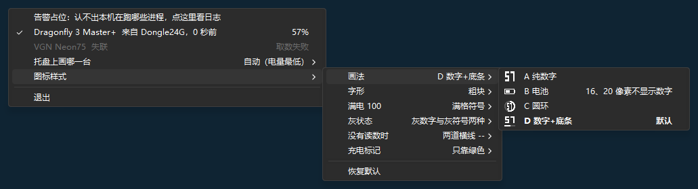
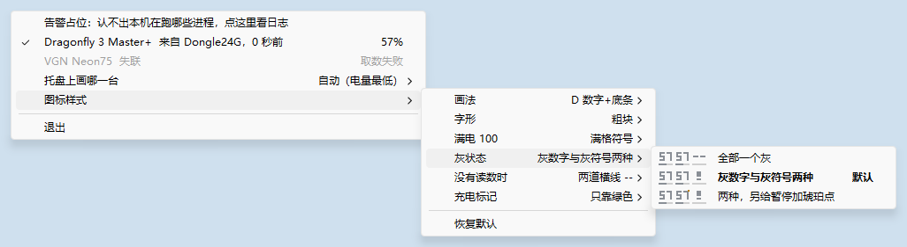
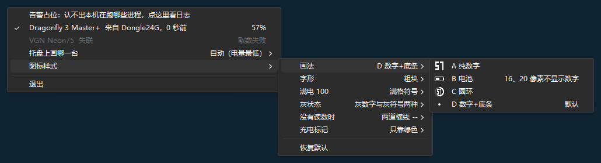
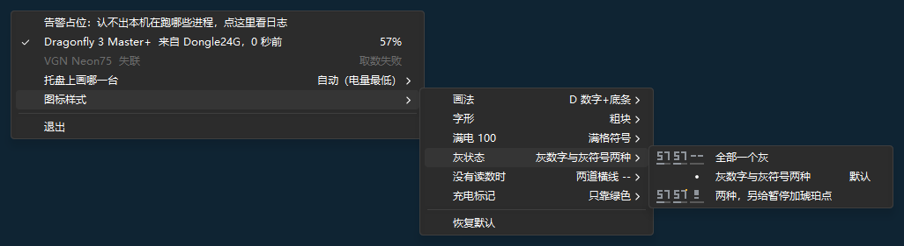
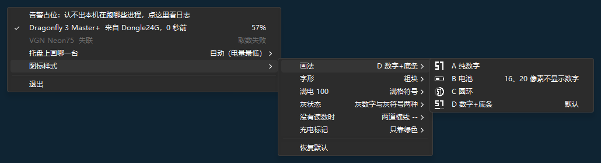

托盘图标设置
托盘上只有 16 个像素，图标怎么画由 8 项设置决定。这一页把每个选项放回它真正要待的地方，按你屏幕的真实像素画出来。页底生成的 [tray] 表，就是托盘将来要读的配置。
已定稿（2026-09-10）。8 项全部是用户设置，决定与理由记在 docs/adr/0005。
浏览器缩放请保持 100%，1:1 对照条才是真实大小。当前检测到的显示缩放：—，对应托盘图标 — 像素。
放回任务栏
Windows 11 的深色与浅色任务栏，在真实设备像素上绘制。托盘区里并排放的是同一个方向在各个状态下的样子——真实的托盘上只会出现其中一个。鼠标移上去能看到状态名。
四个方向并排
每格左边是 1:1 真实大小，右边是 16 像素放大 6 倍、带像素格。先在这里挑方向，再往下细看。行头写着这个状态在词汇表里叫什么、用户该做什么。
选中方向的四个尺寸
16 / 20 / 24 / 32 分别对应 100% / 125% / 150% / 200% 显示缩放。都放大到差不多的显示尺寸，好比较笔画在每一档是怎么落到像素上的。
右键菜单
2026-09-14 按普通原生菜单改过，待审。菜单用 Windows 的普通菜单项，不自绘（ADR-0006）：一项只有一行字、一个贴右的右列；勾、圆点与预览小图共用最左边那一格；没有“小灰字标题”这种项。这一页照原型在实机上量出来的样子画（docs/research/native-menu-research.md 第 8 节），字体、行高、高亮归 Windows，所以这里是示意，不逐像素。
自上而下：告警（有才出现）→ 每台 Device 一行 → 托盘上画哪一台 › → 图标样式 › → 菜单显示 › → 登记设备 › → 开机自启 → 打开配置文件 → 退出。菜单的深浅跟任务栏：深色任务栏时菜单是深色的，浅色任务栏时是浅色的；认不得的 Windows 版本上一律浅色（ADR-0006，Windows 10 1903 起才认）。
虚线下划线的字是占位，措辞归代码，以代码为准；导出的菜单基准里这几处只写占位。设备行抄的是写这一版时代码的说法：来源和多久前照悬停提示（src/tray/hover.rs），短原因照 NoReading::short_reason，“一台 Device 都没有”那句照悬停提示。告警行代码里还没有菜单上的说法，这里是从日志那一句（Warning 的 Display）截的前半句，外加“点这里看日志”，只是示意。
有告警、一台 Device 都没有
告警是不属于任何一台 Device、而用户该知道的一件没办成的事，一条一行，放在最顶上，挂到那件事下一次办成为止；点一下打开日志。三种都挂着时次序固定：认不出本机在跑哪些进程、读数记不进状态文件、配置文件读不了。配置里一台 Device 都没有时，设备行那一块换成一句说明。
设备行：一行三段
名字；中段——这一次取数拿到了读数写来源和多久前（“写出来源和多久前”关着时空着），这一次没拿到读数（取数失败或暂停）写短原因，不受那个开关影响；右列——手上有数（这一次的读数或上次已知值）写电量，没有数写图标状态的名字。普通菜单项只有一个右列（8.1），所以中段接在名字后面，不成一列。图标状态是 Stale、暂停、取数失败、Unknown、无已知值的那几行变灰；一台读不到了、上次已知值低电的设备按低电走，不变灰。完整原因在悬停提示与日志里。
在托盘里改设置
README 定的是“原生菜单，零 GUI 框架”，所以设置不开窗口，全部挂在右键菜单的子菜单里：“图标样式”管图标的六项，“菜单显示”管菜单自己的两项。一级“图标样式”右边不写字；第二层每一行右边写着现在的值；最里一层每个选项前面挂一张预览小图，右边写“默认”或“16、20 像素不显示数字”。点一下立刻生效，并按 ADR-0003 格式保留地写回 config.toml。
预览：只把这一项换成该选项，其余设置照你现在的；电量固定画 57（“满电 100”那一组画 100），不跟上面的电量滑杆；尺寸是托盘此刻那一档（跟“1:1 尺寸”）；调色跟菜单的深浅，也就是任务栏的深浅（跟“细看底色”）。画法、字形、满电画正常，没有读数时画无已知值，充电标记画充电中，灰状态把 Stale、暂停、取数失败三张并排。
这组菜单能点：点一级、第二层的某一行换出它的子菜单，点最里一层的选项就真的改设置，页面上所有预览都会跟着变。行高与文字右移的比例是 100% 缩放下实机量的；125%、150%、200% 下这一页按同样的比例放大，那几档没在实机上看过（parking lot Q212）。
最里一层怎么标出当前选项（请拍板）
原来那一版是“圆点、预览、文字”并排。普通菜单项画不出来：实机上预览位图就画在勾那一格里，挂了位图的项被选中后圆点根本不画（调研 8.3）。画得出的有两种，原型都截了图：
当前项加粗（这一版按它画，导出的基准也按它）：每个选项的预览一张不少，当前项整行加粗，连右边的“默认”一起（MFS_DEFAULT，一张菜单只能有一项，而这里一张菜单恰好只有一个当前值）。
圆点换掉当前项的预览：当前项前面是圆点、没有预览，其余照画（MNS_CHECKORBMP）；丢的是当前那一项的样子，而它此刻正画在托盘上。
还有第三种“把圆点画进预览位图左边一格”，画得出，但圆点的颜色、大小、四档尺寸都得另定、另审，原型没截图。

dark-bold-dir-16.png）
light-bold-gray-16.png）
dark-checkorbmp-dir.png）
dark-checkorbmp-gray.png）
dark-style-dir-16.png）全部子菜单
真实的菜单一次只展开一条路径。这里把八项的子菜单全部摊开，当作规格来看。
登记设备
结构照 resident-tray spec「菜单」一节。本机扫到、带电量属性、地址不在任何 Device 里的蓝牙设备，每一台一个子菜单：“登记到 ›”只列还没有蓝牙地址的 Device（一台都没有就变灰），或者“新建一台 Device”。身份表认得、本机在场、配置里却没有的 HID 设备，每一台一个子菜单，里面是“新建一台 Device”。两种设备的右列写它是从哪条通路扫到的，好分得开同名的蓝牙与接收器。“解除蓝牙登记 ›”列出有蓝牙地址的 Device，右列写那个地址。哪一组没有就不列；三组都没有时只有一行灰字。
设置项
托盘做出来之后，这 8 项会成为 config.toml 里的 [tray] 表，右键菜单里也能改。每个选项都连着上面的预览，点一下就能看到它画出来的样子。标“默认”的是不写这一项时用的值。你的选择记在这个浏览器里，关掉再开不会丢。
出处：.scratch/battery-readout/spec.md 的 Out of Scope（图标先审后写的门槛、四状态 × 四尺寸、完全没有已知值时画什么）；README.md 的设计要点（单图标画 Primary Device 的电量数字、颜色承载状态、原生菜单）；状态的名字一律按 CONTEXT.md。菜单那几节 2026-09-14 按 .scratch/menu-as-designed/spec.md 与 ADR-0006 改过。这一页导出两种基准，都别手改：图标的像素网格（node tests/icon_baselines/export.mjs）与菜单基准（node tests/menu_baselines/export.mjs，连同“灰状态”并排预览的像素网格）；改了这一页，两份都重跑。